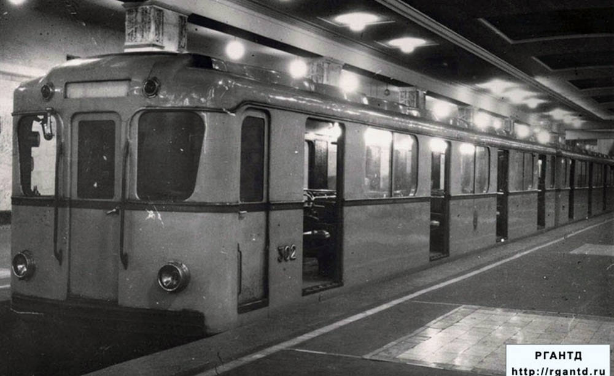
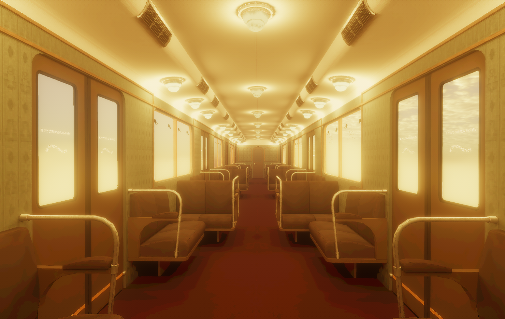
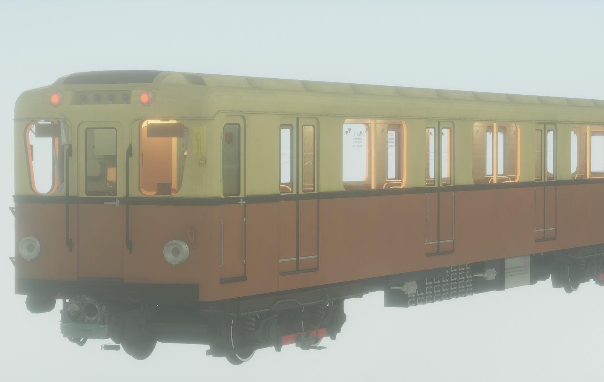
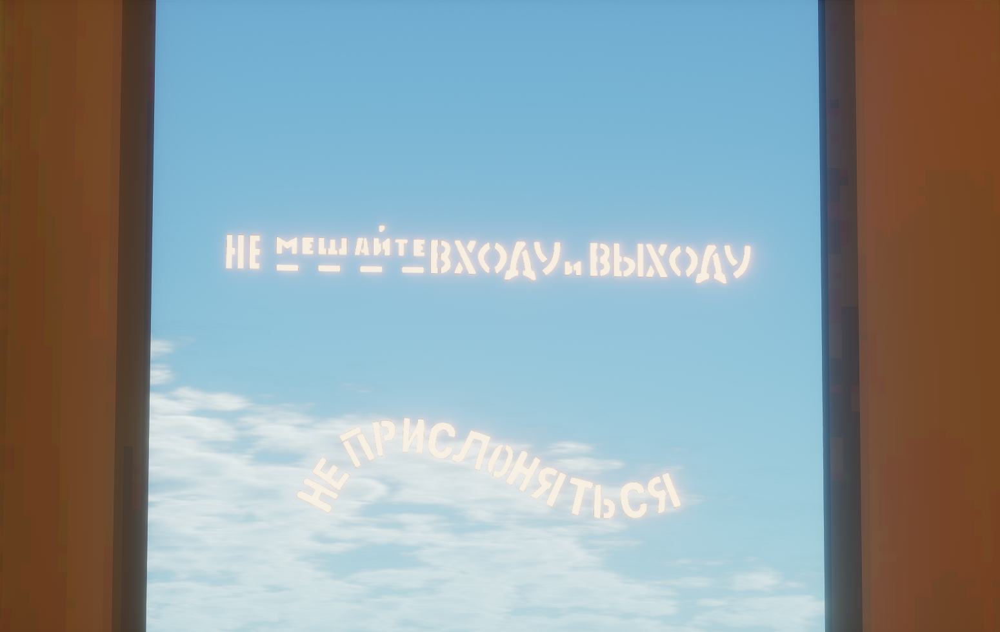

Опытный поезд типа Г №301–306
Опытный поезд типа Г — это шесть моторных вагонов №201–206, построенных в 1940 году. С 1945 года они получили номера №301–306. Это был первый в истории Московского метрополитена поезд, полностью состоявший из моторных вагонов: прицепных вагонов не предусматривалось.
Именно на этом составе отрабатывались решения, которые позже легли в основу серийного типа Г: электрическое реостатное торможение, повышенная скорость, плавный пуск, облегчённый кузов из легированной стали.
Общая информация
🏭 Производство
Заводы: Мытищинский машиностроительный завод, завод «Динамо» им. С. М. Кирова
Год постройки: 1940
Количество вагонов: 6
🔢 Нумерация
Изначальная: №201–206
С 1945 года: №301–306
Тип: Мг (моторный головной)
Ключевая особенность: Опытный поезд типа Г был полностью моторным. Введение электрического торможения и повышение ускорения сделали прицепные вагоны ненужными. Поезда типа Г формировались только из моторных вагонов.
Технические характеристики
| Параметр | Значение |
|---|---|
| Род тока и напряжение | 750 В постоянного тока |
| Тип вагона | Мг (моторный головной) |
| Полная вместимость | 264 человека |
| Сидячих мест | 52 |
| Длина вагона по осям автосцепок | 19 110 мм |
| Длина кузова | 18 770 мм |
| Ширина | 2 700 мм |
| Высота | 3 700 мм |
| Диаметр колёс | 900 мм |
| Ширина колеи | 1 524 мм |
| Масса тары (опытный) | 42 т |
| Материал вагона | Сталь ДС (легированная) |
| Выходная мощность | 4 × 83 кВт |
| Тип ТЭД | ДК-102В (опытные) |
| Макс. скорость | 75 км/ч |
| Макс. служебная скорость | 70 км/ч |
| Ускорение при пуске | 1,0 м/с² |
| Ускорение при торможении | 1,0 м/с² |
| Электрическое торможение | Реостатное |
| Тормозная система | Пневматическая (тормоз Вестингауза) + электрическое реостатное торможение |
Тележки типа МГ: На опытных вагонах были применены тележки типа МГ со сварными штампованными боковинами из легированной стали в комбинации с литыми поперечными балками. Концевые балки отсутствовали. Для снижения шума прямозубая передача была заменена косозубой.
Интерьер: На опытных вагонах была применена смешанная продольно-поперечная схема размещения диванов — уникальная для отечественного метро. На серийных вагонах от неё отказались в пользу продольной схемы.
История опытного поезда
Начало проектирования
Управление Московского метрополитена приступило к составлению задания на проектирование моторных вагонов более совершенной конструкции, чем вагоны типа А. Новые вагоны предназначались для Горьковской линии (отсюда индекс «Г»).
Первый вагон
С Мытищинского вагоностроительного завода на Московский метрополитен прибыл первый моторный вагон типа Г и совершил пробный рейс на участке «Сокольники» — «Центральный парк культуры и отдыха им. Горького».
Испытания поезда
После поступления с завода ещё четырёх моторных вагонов из них был составлен поезд, который испытывался в августе–сентябре 1940 года.
Опытная эксплуатация
Началась опытная эксплуатация поезда на Горьковской линии. Всего в 1940 году было выпущено 6 моторных вагонов типа Г, получивших номера 201–206.
Война и перерыв
План по поставке ещё 50 вагонов типа Г сорвался из-за начала Великой Отечественной войны. К производству метровагонов Мытищинский завод вернулся только в 1947 году.
Перенумерация
Опытные вагоны получили новые номера: №201–206 стали №301–306.
Эксплуатация
Вагоны типа Г эксплуатировались в Московском метрополитене с 1940 по 1983 год. В Ленинграде — с 1955 по 1978 год.
Судьба опытного поезда
📅 Списаны
Август 1976
Опытные вагоны №301–306 были списаны в августе 1976 года.
🔄 Переоборудование
В процессе эксплуатации опытные вагоны типа Г были переоборудованы в серийные и уже не отличались от вагонов последующих выпусков.
Важно: Опытные вагоны №301–306 не сохранились. После списания в августе 1976 года они были утилизированы или использованы в хозяйственных целях.
Значение опытного поезда
⚡ Электрическое торможение
Впервые в отечественном метро применено реостатное электрическое торможение («торможение двигателем»), что снизило износ колодок и бандажей, а также уменьшило количество пыли.
📈 Повышенная скорость
Конструкционная скорость увеличена до 75 км/ч (против 65 км/ч у типов А и Б), ускорение — до 1 м/с² (против 0,7 м/с²).
🏗️ Облегчённый кузов
Масса тары опытного вагона составила 42 т за счёт применения легированной стали и более совершенных тележек.
🎨 Уникальный интерьер
Опытные вагоны имели смешанную продольно-поперечную схему размещения диванов — уникальную для отечественного метро.
Опытный поезд типа Г №301–306 стал важным этапом в развитии метровагоностроения. Отработанные на нём решения были использованы при создании серийных вагонов типа Г, которые выпускались с 1947 по 1955 год и эксплуатировались до 1983 года.
Фотогалерея

📸 Российский государственный архив научно-технической документации

📸 pfandrom(модель RuMTR)

📸 pfandrom(модель RuMTR)

📸 pfandrom(модель RuMTR)
Нажмите на фото для увеличения
«Опытный поезд типа Г №301–306 — это первый шаг к серийным вагонам, которые определили облик Московского метро на десятилетия. Электрическое торможение, повышенная скорость, облегчённый кузов — всё это впервые было испытано именно на нём».